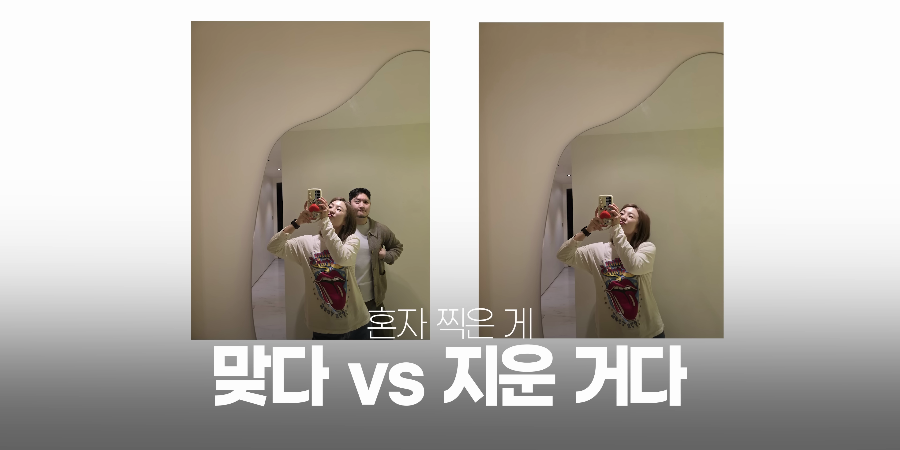

이번 포스트에서는 아이폰과 갤럭시 각각의 AI 사진 지우기 기능을 비교해보는 시간을 가져보겠습니다. 사용자가 지워내고 싶은 객체를 어떻게 인식하고 지우며, 채우는 방식은 어떤 차이가 있는지 살펴보겠습니다.
퀴즈와 힌트
- AI 사진 지우기 기능 비교에 대한 퀴즈 제시
- 애플과 삼성의 기술 비교
- 사진의 진위 여부에 대한 질문
아이폰과 갤럭시의 AI 기능에 대한 흥미로운 비교가 시작됩니다.

AI 지우기 기능 소개
- 아이폰에서는 iOS 18에 클린업 기능 포함
- 갤럭시 S21시리즈에 객체 지우기 기능 도입
- 두 기능의 비교를 통한 사용성 분석
아이폰과 갤럭시에서 제공하는 사진 지우기 기능에 대해 소개합니다.
기능의 차이점
- 아이폰 클린업 기능의 존재
- 갤럭시 AI 지우기 기능의 자연스러움
- 두 기능의 발전 방향성 비교
아이폰의 클린업 기능과 갤럭시의 AI 지우기 기능은 비슷한 목적이지만 개발 방향에서 큰 차이를 보입니다.

첫 번째 비교: 화분 사진
- 복잡한 배경에서의 효과iveness 비교
- 각 기종의 촬영 및 지우기 결과 분석
- 아이폰의 한계와 갤럭시의 자연스러움
복잡한 배경의 화분 사진을 통해 두 기종의 AI 사진 지우기 기능을 비교해보았습니다.
두 번째 비교: 핫팩 손 제거 테스트
- 손이라는 복잡한 객체의 지우기 난이도
- 아이폰의 지우기 개선 필요성
- 갤럭시의 자연스러운 결과물
AI로 복잡한 손가락을 지우는 테스트를 통해 촬영 기술의 차이를 보여줍니다.
세 번째 비교: 꽃다발 사진
- 간단한 테스트로 자연스러움 비교
- 각 기종에서의 인식 및 지우기 과정
- 아이폰과 갤럭시의 기술적 접근 차이
꽃다발 사진으로서 두 기종의 사진 지우기 기능을 간단히 비교합니다.
결론 및 미래 전망
- AI 기술의 급속한 발전
- 갤럭시의 앞선 기술력
- 아이폰의 추가적인 기능 개선 필요성
AI 사진 지우기 기술의 발전 방향과 두 기종의 강점을 정리합니다.
Tags: #AI #사진 지우기 #아이폰 #갤럭시 #클린업 기능 #객체 삭제 #사진 편집 기술 #비교 분석